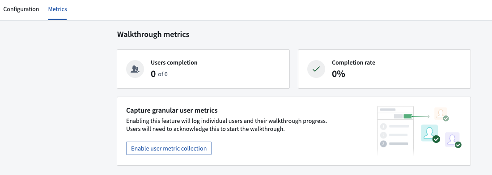
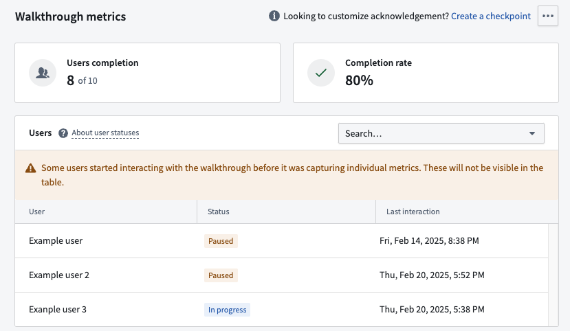
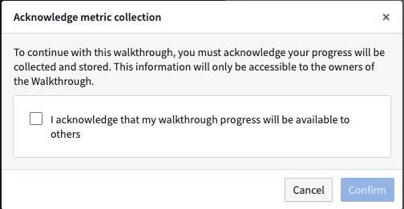

Metrics for a given walkthrough are available in a dedicated metrics tab. This tab is accessible only to the owners of the walkthrough resource.
Aggregated metrics related to the walkthrough are always available and will be displayed on this tab.

To view specific, granular metrics at the individual user level, choose to Enable user metric collection on the Metrics page. Granular metrics are particularly useful if the walkthrough is used for compliance purposes, such as requiring users to complete a walkthrough before accessing a module. Consult your company's privacy officer to determine applicable laws regarding data collection before enabling this feature to ensure compliance with Data Protection and Governance standards.
Once enabled, you will be able to view and track the progress of individual users for a given walkthrough to ensure completion.

Users starting a walkthrough will see a confirmation dialog to acknowledge that their metrics will be visible to others.

You can customize the content of this confirmation dialog by configuring a checkpoint for the walkthrough.